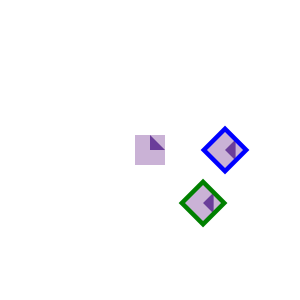

Here's a little more complete version of the arm example...
This has so many parameters (one for the "root" position x,y and one for each angle) that I had to make the sliders with a loop! But try it out and see how each joint is connected to a slider.
But the place to focus on is the drawBody function. It takes the parameters (for the rotations and root positions as parameters) and
draws the hierarchical figure.
In this example, notice how some parts (the body) have multiple parts inside of them. Our hierarchical model is a tree. For the stick figure, the "root" is the body, which has 4 sub parts, (the four limbs).
If you look carefully, you will notice that the arms are actually the same code repeated (I just changed the coordinate system by scaling the X axis to make it go the other direction). I could have made the two arms the same (they are instances).
Because we can have instances (the same part used by multiple "parent" parts), hierarchical models are usually thought of as directed acyclic graphs (or DAGs). A DAG is the generalization of a display list. We discussed display lists in the previous workbook. A common term for a DAG that represents a hierarchical model is a scene graph.
Most retained mode APIs (including SVG and THREE.js which we will use later in the class) support representing models as scene graphs. In Canvas, because it is immediate mode, we either need to represent the graph in our own data structures, or represent the graph implicitly in code. The latter is what the drawBody function does: you can see the hierarchy of parts, but I never create any data structures to represent them.
Hopefully, you noticed that we can do many saves and restores. When we restore, we get back to the most recent save. When we restore again, we go back to the save before that.
We usually think about saving and restoring as a stack. Save pushes a copy of the current context onto the stack. Restore pops a context off the top of the stack and makes it the current context.
An alternative way to think about this is that the "current context" (the one that we are using) is the context at the top of the stack. Save makes a copy of the current context and pushes it onto the top of the stack (so we start using that copy), while restore pops the top element off the stack and discards it (so the "current context" is now the element that is newly exposed on top of the stack). This is how many systems actually implement the "context stacks".
In Canvas, we call these operations save and restore and the act on a context. Many other immediate mode graphics systems have similar operations with a stack of contexts. Often the save operation is called push and the restore operation is called pop (which makes sense given what they do). Because the most important piece of context we save is the current coordinate system (or transformation), the stack of contexts is sometimes called a matrix stack because transformations are represented as matrices (we'll get to that next week).
I mention all that because (1) you need to understand the concept of the stack; and (2) when you read code (or books) written for something other than Canvas, you will see stack terminology.
Now you are ready to read Chapter 7 of "The Big Fun Graphics Book" (Hart) Hart07-jan19.pdf. The concepts were covered in the workbook (and code), but they are so important that its good for you to see them another way.
The matrix stack (save and restore) model is very procedural: it represents the hierarchical structure of the objects implicitly in the code. There is no representation of groups (unless your code has them). Things just get drawn with the current transformation (i.e., in the current coordinate system).
In a retained mode system, the DAG (scene graph) is represented as an explicit data structure. Each part (graphics object) is an object (data structure object). Parts can contain lists of children (other parts that are inside of them). Children (usually) know who their parents are.
There are two different ways that APIs represent hierarchies:
All objects can contain children, so each object has a list of other objects that are its children. A "leaf" node of the tree is simply an object that has no children. Objects need to take care of their own behavior, and then take care of their children. The DOM in the web browser (remember from week 1?) is an example of such a system. Any element can have other elements as children: we can stick a button inside of a paragraph. (there are some limitations, but more or less most elements can have other elements inside of them).
Only special group objects contain children. Group objects have no shape themselves - they are just a holding place for other objects which may be shapes. Groups can contain other groups. SVG is an example of an API that uses groups to create hierarchy. THREE.js (which we will get to in a few weeks) is another system that uses groups.
In order to get used to the idea of using groups to create hierarchy, we'll practice with SVG.
You may want to review what you learned about SVG from last weeks' workbook. You may want to go back to the basic SVG tutorials Tutorial:SVG:1 getting started, Tutorial:SVG:2 coordinates. The Mozilla Tutorial also works up from the basics to the more complicated things like transformations.
In SVG, we can apply transformations (including rotation, translation and scale) to any object. We can also create special group objects that contain other objects. Of course, we can transform group objects (since we can transform any object).
Please read my tutorials on SVG to see how groups and transformations work. Tutorial:SVG:3 Manipulating primitives, Tutorial:SVG 4: groups, transforms, Tutorial:SVG 5: more transforms and composition
While we can put SVG right into our HTML files, it is often more convenient to just load from a file. Here's an example:

You can read more about how to place SVGs on web pages in the Official Documentation. You'll see a lot about supporting old browsers that don't support SVG, which we don't need to worry about for class.
I will put the SVGs in separate files so you don't have to go fishing in this long HTML
file to find them. That SVG is A03-5-hierarchy-svg1.svg and it shows how reversing the
order of translate and rotate transformations gives different results. You can see in that example that I create a group, and I can re-use the group (instancing!).
There is some weird stuff at the beginning of the svg file (the SVG element has xmlns attributes). This seems to be required when you load an SVG. Otherwise, the SVG file looks just like what we drop inside an HTML file. You can also load the svg file directly in the browser try it.
On future pages, you will be asked to make your own svg picture.
Hopefully, you have gotten the idea of how we use hierarchical modeling to put complicated objects together. Next week, we'll learn about how transformations are implemented using linear algebra. But for now, we'll give you a chance to make some models on your own on the next pages. Note: there are 2 more pages in this workbook, both with exercises!
{kind=link}